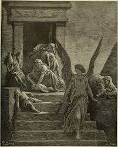
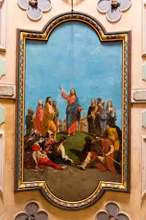

Moses 1:39
For behold, this is my work and my glory—to bring to pass the immortality and eternal life of man.
Moroni 10:4-5
By the power of the Holy Ghost ye may know the truth of all things.
2 Nephi 2:25
Adam fell that men might be; and men are, that they might have joy.

2 Nephi 31:20
Ye must press forward with a steadfastness in Christ, having a perfect brightness of hope.

Alma 32:21
Faith is not to have a perfect knowledge of things; therefore if ye have faith ye hope for things which are not seen.
1 Nephi 3:7
I will go and do the things which the Lord hath commanded.